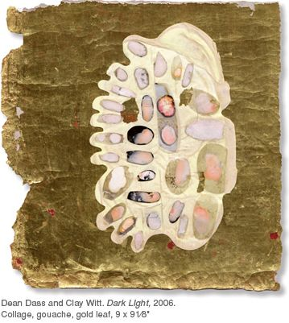

Dean Dass and Clay Witt | Dark Light
collaborative & individual works Through 20 January 2007
11–5, Tuesday – Saturday
Opening, First Friday Friday, 1 December. 5:30 - 8 pm

line 25
But pass me, someone,
The fragrant cup
Brimming with dark light,
So that I may rest now; for sweet
It would be to drowse amid shadows.
line 30
It is not good
to be soulless
With mortal thoughts.
— from Remembrance, Friedrich Hölderlin, 1770–1843
The angels of transfiguration speak from the heart of dark light because long ago they abandoned themselves to being dissolved in its depths:
“It belongs to the holy image which we are shaping,” Hölderlin wrote to a friend on the eve of a mental, physical and emotional breakdown from which he never recovered. Deranged classicism and a beautifully warped sense
of the proportions of the soul seem to have been his territory, through which a damaged and lucid calling beckoned him to release himself through art.
The show takes its name from the ‘dark light’ of Remembrance, a thing Hölderlin imagines one is capable of drinking. And yet it was dark light that drank Hölderlin.
When he wrote about this holy image, he might as well have been writing about collaboration. Art, no matter its medium, is always direct collaboration. In our own lives, the agent, the instrument of memory is nothing other
than the image. No matter how it’s rendered, no matter what medium it is inscribed in, whether the shades paint their moment in adjectives and
figurative modes of expression, or whether such dark light glimpses itself into being in the way shade and light interact to play off gold leaf, burnished to
a high shine, it threatens your reflected face as much as it gives it back to you in a world of rust, birds, and faces that might be childishly abstract were they not so wounded, scarified, and smeared.
The pictures that this poetic image has loosed come from the intensely private workshops of each artist, thrown open (reluctantly, one senses) not just to each other, but to the public. These are the artistic processes that take my breath away—ancient but not yet anachronistic—and it is a miracle that the product of each creative act conceals the simple fact that one can sit in
a room and tug on one end of the pretty chain which binds him to Hölderlin, and feel the tautness, the resonance in the images themselves.
I am no stranger to this phenomenon. Sometimes when I write, I hear Keats, not exactly coughing in my ear, but as a quiet presence in the air around me. It is an intensification of the relationship we alone of all creatures enjoy with the dead, radiating a presence fraught with pain and potential. I imagine
that Dass and Witt feel the presence of Hölderlin: the mystic in me wants to argue that contagion works across time with influence and collaboration as its vessels. He is meaningful to these artists not just through some admiration or natural affinity, but as one of the ‘first among equals’ in the unending line of creative latter-day saints, completely absorbed in their worlds, even
to the point of madness: Blake, Eliot, Rublëv, even Hannah Cohoon. Dass and Witt have engaged in equal parts alchemical natural philosophy and ritualized ancestor worship. T.S. Eliot put it this way: the artist “is not likely to know what is to be done unless he lives in what is not merely the present, but the present moment of the past.”
Think of dark light as the chamber in which selfhood and identity are broken down under a colluded, articulating pressure of formulation and change; or the kind of sacrifice that must necessarily initiate the shaping of the images you see here; or perhaps it is another name for irony, the personality of history itself. Packs of contagion (to filch a phrase from Deleuze) work back and forth across time, just as they work between individual artists, themselves cells of a particular osmosis that can be shared. All moments are now—isn’t it dark light that threads them together? “Eternity is in love with the productions of time,” wrote William Blake, even though “the sea takes and gives memory,” as though an offering were required of each one of us. The sacrifice is a gentle and rewarding one, begged in a single polyphony
of voice and image: abandon yourself to pure presence and be a witness to this dark light.
— Sam Witt is a widely-published writer whose second book of poems Sun